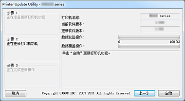

打印机更新实用程序的操作环境
-
目标操作系统
-
Windows
-
- Windows 8、Windows 7、Windows Vista、Windows XP
-
Mac OS
-
- Mac OS X v10.8、Mac OS X v10.7、Mac OS X v10.6、Mac OS X v10.5.8
-
-
要求
-
- 安装了打印机驱动程序的计算机。
-
如果您使用Windows，请打开打印机驱动程序的“属性”窗口，显示端口选项卡，然后选择启用双向支持。 有关打开“属性”窗口的说明，请参阅打印机随附的屏幕手册。
-
- 您使用的打印机
-
- USB电缆线
-
- 打印机更新实用程序
 重要事项
重要事项
-
检查是否需要更新
您可以通过打印喷嘴检查图案检查是否需要更新。
检查软件(固件)版本“Ver. X.XXX”，此信息打印在喷嘴检查图案的打印结果中。 如果固件版本早于Ver. 2.000，则需要固件更新。
根据下述的“固件版本更新程序”来进行更新。
 注释
注释
-
有关打印喷嘴检查图案的说明，请参阅打印机附带的屏幕手册。
固件版本更新程序
-
使用USB电缆线连接计算机和打印机。
如果连接了用于摄像机连接的LAN电缆线或USB电缆线，请断开这些电缆线连接。
对于带有卡槽的型号，请移除卡槽中插入的所有卡。
注释
-
确保只有一台打印机通过USB电缆线连接到计算机。
重要事项
-
如果您使用Mac OS，请确保设置了您的计算机，使其不会进入休眠模式。
-
-
如果您使用Windows，请双击
 (Printer Update.exe)以启动更新实用程序
(Printer Update.exe)以启动更新实用程序
如果您使用Mac OS，请双击
(打印机更新)，以启动更新实用程序
-
检查步骤 1中的内容[即显示在打印机更新实用程序(Printer Update Utility)中的内容]，打开打印机电源，然后单击下一步。
注释
-
如果显示错误消息，则原因可能是：
-
原因(1)：USB电缆线未连接。
纠正措施：连接USB电缆线，并从步骤1重新开始。 -
原因(2)：下载的更新文件适用于另一台打印机。
纠正措施：下载针对要更新的打印机的文件，然后从步骤1重新开始。
-
-
-
检查步骤 2 中的内容[即显示在打印机更新实用程序(Printer Update Utility)中的内容]，打开打印机电源，然后单击启动。
*显示的操作窗口可能会有所不同，具体取决于您使用的操作系统。
打印机名称：连接到计算机的打印机的名称。
当前软件版本：连接的打印机的软件版本。
更新软件版本：此时打印机要更新到的软件版本。
重要事项
-
在更新完成后，再关闭打印机或断开USB电缆线连接。 否则可能导致错误。
-
-
如果无法单击启动，是因为尝试在不需要固件重写的打印机上更新。 再次检查当前软件版本。 如果它不需要更新，则取消更新。
-
更新过程中，打印机上的错误指示灯可能会闪烁橘黄色。
-
当打印机更新实用程序(Printer Update Utility)中显示步骤 3窗口时，请检查消息内容并单击退出。
这会完成固件更新。
版本更新完成后，打印机电源会自动关闭。 若要使用打印机，请先断开电源电缆线连接，重新连接它，然后再次打开电源。
如果打印机使用LAN连接，则首先断开USB电缆线连接，然后连接LAN电缆线。
重要事项
-
如果您将通过LAN连接使用打印机，则将普通打印机设置返回LAN连接。
如果您使用Windows，则要将设置返回到LAN连接设置，您必须将“Canon XXX 打印机”的端口名称选择为“CNBJNPxxxxxxxxxx”。
有关设置说明，请参阅打印机随附的屏幕手册。
注释
-
如果更新过程中关闭了电源，则更新将不会正常结束。
如果打印机没有正常运行，则即使关闭打印机电源并再次打开，更新也可能不会正常结束。
-
注释
错误原因和纠正措施
如果在打印机更新实用程序的操作过程中检测到错误，则会显示错误消息。
如果显示错误消息，请按照消息说明中的描述执行操作。
下表列出了可能显示的主要错误消息的原因以及纠正措施。
|
消息 |
原因 |
纠正措施 |
|---|---|---|
如果您使用Windows或Mac OS |
||
|
该程序不支持正在使用的操作系统。 |
试图在打印机更新实用程序不支持的操作系统上运行该实用程序。 |
在受支持的操作系统上运行打印机更新实用程序。 |
|
已连接多个打印机。 确保仅有一台打印机使用USB电缆线连接，然后重新启动实用程序。 |
两台或更多需要更新的打印机连接到了计算机。 |
仅连接一台打印机。 |
|
打印机状态不正确。 再次开启打印机，然后重新启动实用程序。 |
打印机无法执行更新。 |
再次打开打印机电源。 |
|
打印机功能更新过程中发生错误。 由于更新失败，无法使用当前状态的打印机。 再次开启打印机，然后确保重新启动实用程序。 |
在执行更新过程中打印机电源关闭或USB电缆线断开连接。 |
按OK按钮以终止打印机更新实用程序。 关闭打印机电源，等待几秒钟之后再次打开电源。 如果打印机不能正常启动或无法执行更新，则必须进行维修。 |
如果您使用Windows |
||
|
未找到打印机。 确认下列项目，然后重新启动实用程序：
|
|
|
|
如果您使用Mac OS |
||
|
Mac OS X Classic正在运行。 |
在Mac OS X上运行“Classic”时，试图运行打印机更新实用程序。 |
停止“Classic”并从Mac OS X运行打印机更新实用程序”。 |
|
未找到打印机。 确认下列项目，然后重新启动实用程序：
|
|
|